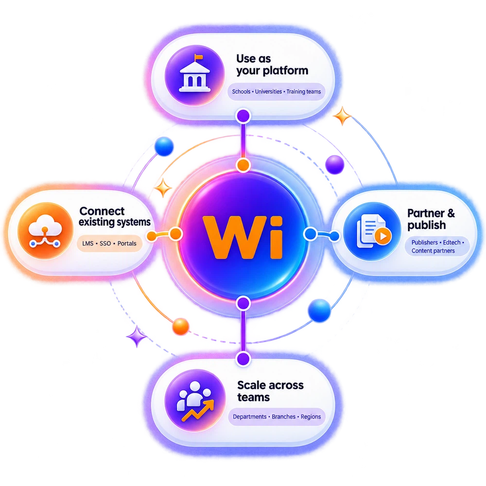
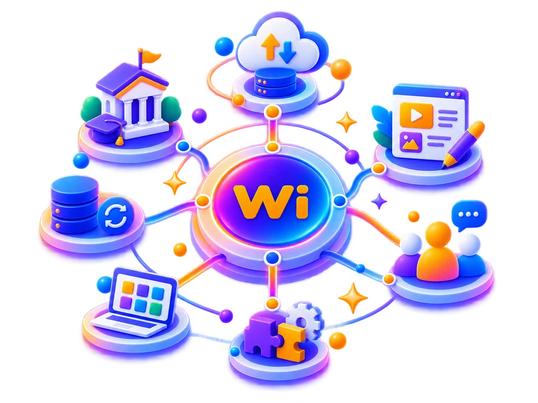
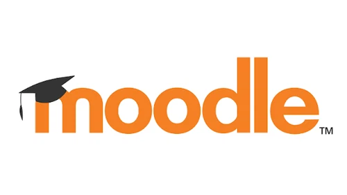
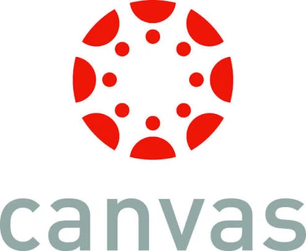
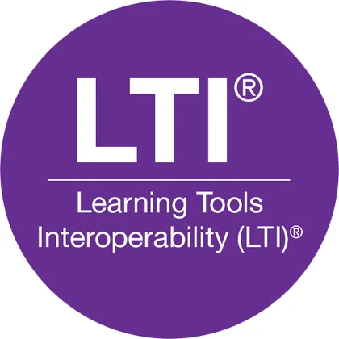
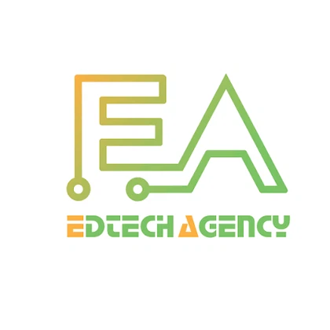
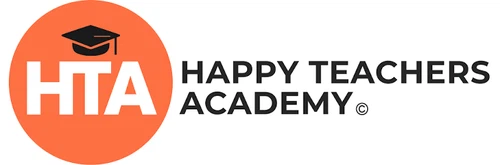
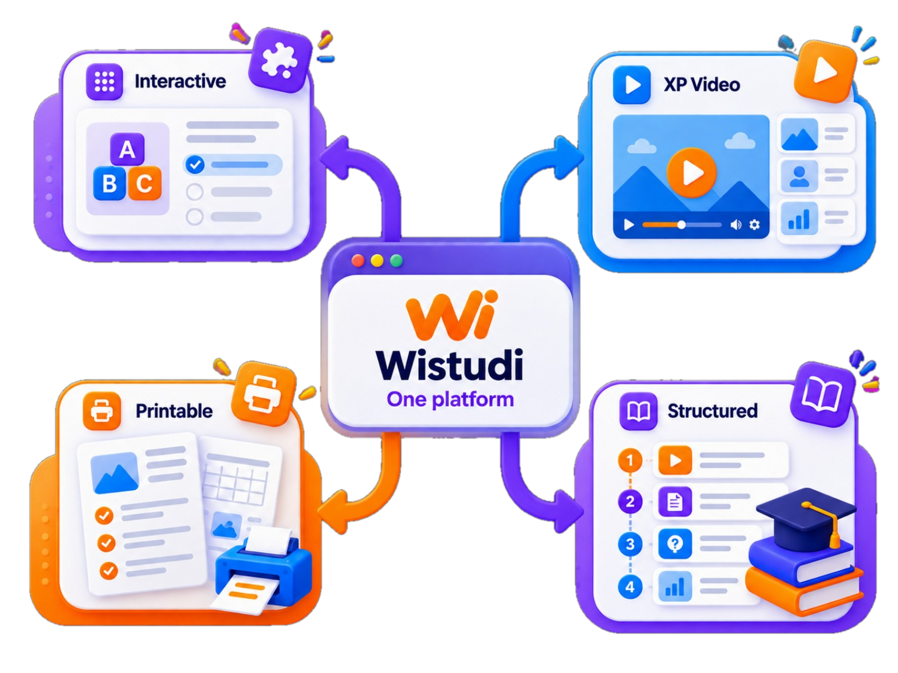
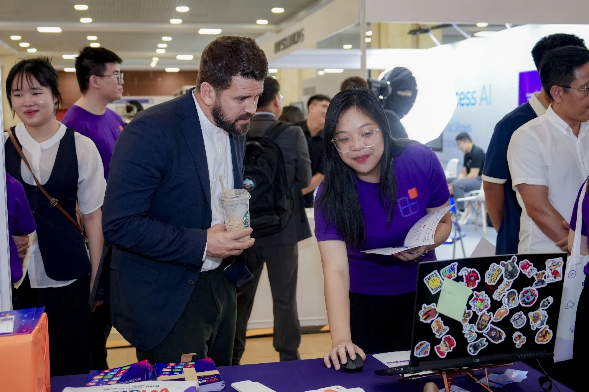

Your learning environment
Bring publishing, learner access, assignments, assessment, social learning and reporting into one organisation-ready space.
Connected workspaceUse Wistudi as your learning and publishing platform, connect it with systems you already rely on, or expand it with specialist technology — without fragmenting the learner experience.

The core platform remains connected, while your people, brand, content, permissions, reporting and integrations can be organised around your own model.
Bring publishing, learner access, assignments, assessment, social learning and reporting into one organisation-ready space.
Connected workspaceCreate a recognisable learning experience around your organisation, programmes and audiences.
Organisation identityManage administrators, publishers, educators, trainers, learners, groups and cohorts.
People & groupsBuild private lessons, courses, curricula, training and reusable content libraries.
Private librariesSee progress, participation, assessment and outcomes at learner, group and organisation level.
Results & visibilityControl who can create, publish, access and manage learning across your environment.
Roles & controlConnect Wistudi to the wider LMS, identity, portal or technology ecosystem around you.
Modular connectionsExpand across teams, clients, campuses, departments, communities or networks.
Grow when readyThe operating model can change without forcing the learning experience to become a different product.
Interactive lessons, classroom delivery, worksheets and learner groups.
Course content, learning experiences, cohorts and interoperability pathways.
Client programmes, workshops, blended learning and reusable training libraries.
Internal learning, onboarding, development programmes and results visibility.
Package and distribute structured interactive and printable learning resources.
Connect specialist capabilities into modular Wistudi learning experiences.
Start with the platform, add connections around it, or make Wistudi one part of a wider ecosystem.
Run publishing, learning, management, assessment, reporting and social learning directly inside Wistudi.
Connect Wistudi into existing LMS, identity, portal and learning workflows without replacing everything.
Use Wistudi as one part of a broader education or technology environment, with external capabilities joining the experience.
Wistudi is designed around modular learning experiences, so its own capabilities and external technologies can work together more naturally.
Publishing, learning, assessment, reporting, community and printable workflows remain native.
LMS, identity, portals and organisation workflows can sit around the core experience.
Partner blocks and external tools can expand the learning stack without fragmenting the learner journey.

Wistudi is being designed to connect with established learning environments and interoperability standards. Integration ecosystem logos are shown separately from organisations and communities we work with.
Examples of systems and standards Wistudi is designed to connect with or support through interoperability pathways.



Organisations and communities Wistudi works with can be shown separately from technical integration ecosystems.


Organisation control is not just a layer around learning. It is what makes the learning environment usable across real teams, cohorts and programmes.
Shape the organisation experience around your identity.
Admins, publishers, educators, trainers and learners.
Control who can create, publish, access and manage.
Keep organisation learning private where required.
Build reusable resources, curricula and training libraries.
Organise classes, departments, cohorts or clients.
Keep the operational structure consistent even as teams use different formats and programmes.
Interactive, video, printable, live, self-paced and blended learning can sit within the same publishing and management environment.
Flows, activities and assessment.
Video becomes active learning.
Worksheets, handouts and resource packs.
Courses, curricula and training programmes.

Events, demos and conversations with educators, organisations and collaborators help keep Wistudi grounded in how learning is actually delivered.

A phased route lets organisations prove the use case first, then expand control, content and integrations as the need becomes clearer.
Start with a team, course, department or focused use case.
Add publishers, learners, content libraries and programmes.
Integrate Wistudi into wider learning infrastructure where needed.
Deploy across larger organisations, campuses, clients or networks.
Using Wistudi as an organisation is different from integrating technology or collaborating as a partner. The page keeps those routes distinct.
Use Wistudi directly for teaching, training, publishing, programmes or community learning.
Connect specialist capabilities, distribution reach or technical infrastructure around Wistudi’s modular architecture.
The point is not that every organisation should replace every system. It is that learning, publishing and management should not become fragmented just because several tools are involved.
Use Wistudi independently, shape it around your people and content, connect it to existing systems, or expand it through specialist partner technology.